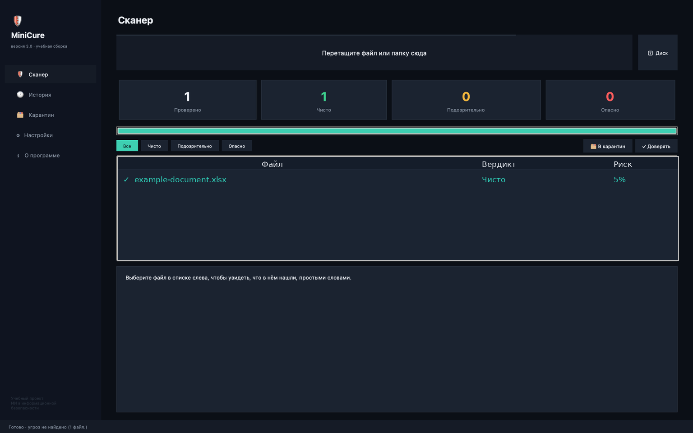
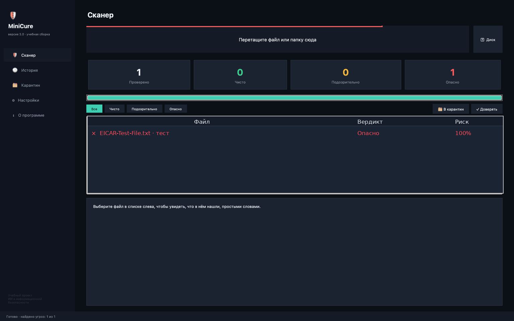

Сканирование
Проверка выбранных файлов и папок, а также запуск проверки диска.
MiniCure — компактный учебный сканер с понятным интерфейсом, проверкой SHA-256 и эвристическим анализом.
Версия 3.0 · DMG для Mac · учебная сборка

MiniCure создан как учебный проект, чтобы показать базовые принципы многослойной проверки файлов.
Проверка выбранных файлов и папок, а также запуск проверки диска.
Сравнение цифрового отпечатка файла с доступной базой известных тестовых сигнатур.
Набор заданных правил отмечает отдельные подозрительные признаки.
Интерфейс для работы с файлами, отмеченными во время сканирования.
Результаты прошлых проверок остаются доступны между запусками.
Запуск более широкой проверки с учётом доступности файлов и настроек сканирования.
Примеры интерфейса показывают разные исходы сканирования. Демонстрационное обнаружение не является доказательством защиты от всех реальных угроз.
Результат отображается в списке с оценкой риска и поясняющей областью.

Демонстрационный тест помогает проверить путь отображения вердикта в приложении.
Скачайте тестовую сборку, ознакомьтесь с ограничениями проекта и сообщите об ошибках.